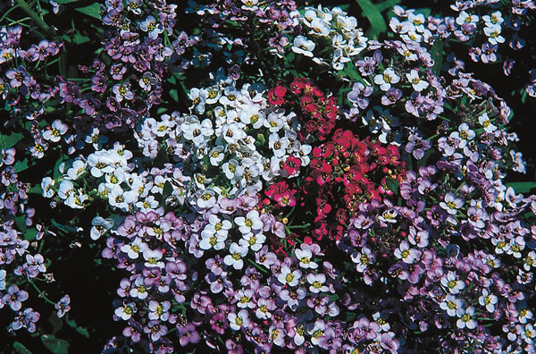

10 Easy & Useful Flowers
These special plants provide beauty, fragrance, food, medicine and more.
By Barbara Pleasant
February/March 2006
We value beauty for its own sake, yet many colorful flowers have much to offer beyond their good looks. Some can be used medicinally, others are good to eat, and many provide food and habitat for beneficial insects. Some flowers are threatened by habitat destruction just like birds and other wild things, so growing flowers is simply a good idea. Give multipurpose flowers a bit of space in your garden and prepare to be amazed at what they can do for your health, your palate and your spirits.
Amazing Annuals
Annuals are flowers that grow from seed to bloom and produce seed in the course of one growing season. Annuals often bloom for a longer period of time than winter-hardy perennials and will do well in new soil thats been dug and amended with organic matter. You can sow the seeds of these plants directly in the garden.
If youre a new gardener unsure of which little green things are weeds and which plants are flowers, you also can sow some seeds indoors in a small container and use the seedlings as visual guides. These annuals, as well as the perennials discussed later, bloom best when they receive at least six hours of sun each day. See Woodland Wonders, below, if your planting plans are limited by shade.
Whether you prefer your calendulas orange, yellow or somewhere in between, all are easy to grow in cool weather and bloom for weeks or months if you remove seedheads before they mature. Many cooks snip a few calendula petals into eggs or rice as poor mans saffron, and chickens fed calendula flowers lay eggs with darker yellow yolks. Calendulas make great cut flowers, but their greatest use may be as topical oils or creams for burned or injured skin. In a recent study of 254 breast cancer patients undergoing radiation therapy, calendula ointment proved superior to the most widely used prescription product for preventing radiation burns. These latest findings are among a growing number of studies that validate calendulas ability to help heal injured skin.
Want to make your own calendula first-aid oil? Molly Bunton of Mollys Herbals in Mooresburg, Tenn., suggests drying the blossoms first, then combining them with olive or almond oil in a blender (2 ounces dried blossoms per 1 cup oil). Put the lumpy mixture in clean jars and keep them on a hot, sunny windowsill for two to three weeks, shaking them daily. Pour the infused mixture into a cloth bag and squeeze out the oil. Let the oil settle for a few days before straining it through good-quality paper towels. Bunton suggests keeping it from going rancid by squeezing the contents of one natural vitamin E capsule into every 4 ounces of the oil.
When Michigan State University entomologists counted beneficial insects on 46 plants, sweet alyssum outperformed all but one native plant (boneset) and bloomed longer than any of its competitors. Integrated pest management programs in California, Colorado and Wisconsin also recommend sweet alyssum as a comely plant for pest-prevention purposes, but attracting hoverflies and other beneficials is only one of this flowers talents. Sweet alyssums fine texture and spreading habit make it ideal for edging beds or planting with other flowers in containers - and older open-pollinated varieties are especially fragrant.
"Sweet alyssum seems to be most fragrant in the morning," says Diana George Chapin, horticulturalist at the Heirloom Garden of Maine. Most gardeners agree that its aroma is similar to honey or beeswax. Chapin says when she grows sweet alyssum in hanging baskets in the greenhouse, visitors often ask about the stunning fragrance as soon as they walk through the door. In many climates, sweet alyssum reseeds well, but it never becomes weedy. It grows best in cool weather but may die out in humid heat.
"Beneficial insects will find a home in your garden if you grow lots of plants with umbels (clusters of flowers with stalks in the shape of an umbrella), like dill and fennel," says Lynn Byczynski, who grows cut flowers in Lawrence, Kan., and is the author of The Flower Farmer. "I grow Ammi majus and Ammi visnaga, two white-flowered relatives that look like wild Queen Annes lace," Byczynski says. The two species have only slight differences; both look as good in a garden as they do in a vase, and you may want to add them to your slug- and snail-fighting arsenal, too. When Egyptian researchers doused two species of snails with an ammi brew, many were killed and those that survived laid far fewer eggs. Ammi can reseed, especially in warm climates, though its not as invasive as Queen Annes lace. Keep ammi out of grazing pastures because animals that consume furocoumarins - present in the seeds and other plant parts of ammi become hypersensitive to light and can suffer severe sunburns.
Nasturtiums are so easy to grow that they are recommended for childrens gardens, and getting children involved with growing plants is one way to offset what author Richard Louv calls nature-deficit disorder. Nasturtiums also turn up on many lists of deer-resistant plants, and German researchers have found that nasturtium leaves and immature seed capsules contain a rare sulfur compound called glucotropaeolin that has antibacterial properties - something known to the native people of Peru, who have long used nasturtium as a medicinal plant.
Nasturtium leaves and flowers are edible, too. At Carolees Herb Farm in Hartford City, Ind., owner Carolee Snyder makes appetizers by stuffing nasturtium flowers with herbed cream cheese. Nasturtium vinegar is pretty and flavorful, too, with a slight peppery taste, Snyder says. Softly fragrant nasturtium flowers have a mild peppery-sweet flavor, but the leaves are much spicier. They taste like watercress and contain 10 times the vitamin C found in most types of lettuce.
Woodland Wonders
A shady wooded yard is a great place to try flowers that have been used as medicinal plants for thousands of years. “Even if you start small, you can grow enough plants to harvest to make your own products,” says Jeanine Davis, a professor at North Carolina State University’s Mountain Horticultural Crops Research and Extension Center, and co-author (with ginseng grower Scott Persons) of Growing and Marketing Ginseng, Goldenseal & Other Woodland Medicinals. Some of the prettiest woodland medicinals include pinkroot (Spigelia marilandica; shown at right) and fragrant black cohosh (Actaea racemosa), which thousands of women use to ease the symptoms of menopause. Davis also loves bloodroot, because it blooms in early spring, and suggests wild ginger as a beautiful ground cover.
These and other woodland wonders are not hard to grow if they like the site. “Spread them around in a couple of places, because the same plant may thrive in one spot and refuse to grow in another,” Davis says. Woodland medicinals can be grown for profit (her book provides cultural and financial guidance), but the main thing they can do is enhance the diversity and beauty of a wooded yard. When Davis and her husband recently sold their suburban house, which included an oversized wooded lot they had lavishly planted with woodland natives tucked among meandering paths, they got their asking price and ultimately had to choose among buyers.
Anthropologists arent sure if Native Americans of the Southwest began cultivating sunflowers on purpose, or if the sunflowers took the lead role by following the tribes, springing up in garbage heaps at the edge of settlements. Either way, European explorers in America quickly recognized the value of sunflowers, which became a popular crop in 19th-century Russia. At the time, religious rules forbade the use of common cooking oils during Advent and Lent, but sunflower oil wasnt named in the scriptures. As a result, Russian plant breeders created productive varieties that turned oil-producing sunflowers into an important commodity crop.
Since then, sunflower varieties have become even more diverse, and you can choose between tall, upright forms, bushy, branching varieties and others that have been bred for pollen-free cut flowers. Depending on the variety you choose, there are a number of creative ways to plant them. As a family project, grow rings of sunflowers with runner bean sidekicks to create a secret playhouse for children, or grow sunflowers to attract winged seed-eaters to your yard.
Sunflowers are easy to grow, though its important to remember they are phototropic plants that will twist around until they face the direction from which sunlight is strongest. Choosing among dozens of varieties can be a challenge, too, but not if you focus on your goal. Want a towering giant? Try 12- to 14-foot-tall Sunzilla or Titan. Tall varieties also tend to produce large, easily hulled seeds for snacking, but birds arent that picky. The black oil sunflowers sold as birdseed are usually low-grade oil-seed varieties; hulled birdseed products often are rejects from the snack food industry.
Its worth mentioning that most people who are allergic to tree nuts and peanuts can safely consume sunflower seeds. There is even a peanut butter alternative made from sunflower seeds, called Sunbutter, developed by North Dakota-based SunGold Foods with help from U.S. Department of Agriculture food scientists. Sunbutter spreads and cooks like peanut butter, and even has beat it in some taste tests.
Practical Perennials
Hardy perennials die in winter and re-emerge in spring. Perennials are hugely popular in cooler climates, partly because they are ready and waiting as soon as the soil begins to warm in spring. Many perennials struggle in warmer, humid climates, where root rots and foliage diseases can take a heavy toll. However, day lilies and several other perennials can survive these stresses. The five perennial flowers discussed here will prosper when given appropriate sites in a wide range of climates.
Echinacea (Echinacea purpurea)
Often called purple coneflower, echinacea is easy to grow, and the blossoms are frequented by bees and butterflies. You also can use echinacea to make your own immune system-enhancing medicine. Yes, I read the study published in the New England Journal of Medicine last summer that reported echinacea was not effective against a common cold virus, but I also read follow-up points made by the American Botanical Council that the dose used in the study was one-third what it should have been.
Whether pharmacologically proven or just a placebo, echinacea works for me. In the fall, I dig two-year-old plants, pull apart their crowns, keep the nicest roots and replant the rest. I scrub the keepers clean, air dry them for a day, then chop them up and put them in a clean glass jar, with a few leaves added for punch. I cover everything with 100-proof vodka, screw on the cap and let it steep for three weeks before straining it. By then, a drop of the stuff on my tongue leaves a tingly numb spot -evidence that the polysaccharides and other compounds in the echinacea have turned the vodka into a true tincture. I havent had a cold in a couple of years, so if the next group of researchers who study echinacea want something that works, I suppose I could share a little of my stuff.
In recent years, breeders have developed a rainbow of new echinacea varieties that bloom yellow, orange and red. A patented cultivar with variegated leaves is even available. Im trying these, but so far they havent shown the staying power of the wildflower strain that grows in my medicine bed.
Day Lily (Hemerocallis species)
Day lilies, in comparison, have staying power to burn, and their ropelike roots make them useful for erosion control. Ive always kept a few day lilies around, yet Ive never understood why some gardeners become enthralled by a flower that only lasts a day. Now that there are more day lilies that rebloom, Ive become quite a fan of them??not so much for the showy flowers, but for the big, delicious buds. When picked just before they open and cooked in a little olive oil until they caramelize to a brown color (less than five minutes), day lily buds are a marvelous little vegetable. Imagine the tenderness of asparagus combined with the savory flavor of a baby snap bean, and you have a pan-braised day lily bud.
Relax with lavender by placing sachets of dried flowers in your linen closets.
You can eat opened day lily flowers, too, but remove the stamens before you slice the petals into your salad. Day lily buds, flowers and even young leaves have been eaten and used as medicine in China for thousands of years. Confucius recommended consuming day lilies to ease the pain of grief, and recent research at Michigan State Universitys Bioactive Natural Products and Phytoceuticals Lab has revealed that day lily petals are loaded with an array of antioxidant compounds. The researchers analyzed petals from Stella DOro, the dwarf reblooming yellow-orange variety often used in low-maintenance commercial landscapes. Other yellowish Stella descendants include Stella Supreme and Miss Mary Mary - the longest blooming day lily Ive ever grown.
Garlic Chives (Allium tuberosum)
A culinary herb and a beautiful flower, young garlic chive leaves can be used in salads or sprinkled over potatoes. Garlic chives are often included in perennial display gardens, too, where they bloom from late summer to early fall and attract many beneficial insects. The starry white flowers on strong stems are wonderful, Byczynski says. You need not worry that they smell like garlic, because garlic chive blossoms have a light lilac scent. Its a good idea to remove spent flowers to keep them from shedding too many seeds and becoming invasive. If you cant bear to take them from your garden, then gather them up just as their black seeds harden and thresh them out in a paper bag. Then you can sprout them and enjoy their zingy flavor on salads and sandwiches in winter, when fresh pickings from the garden are in short supply.
Lavender (Lavandula species)
Rose Marie Nichols McGee, owner of Nichols Garden Nursery, says she was not surprised to discover the results of a Japanese study that confirmed lavenders ability to create feelings of relaxation helped subjects solve math problems. My mother always placed sachets of dried lavender in the linen closet, and Im sure I slept better, Nichols McGee says. Lavender has been used in aromatherapies since the time of the Roman Empire, and there are numerous named varieties, most of which are winter hardy to Zone 6. A few superfragrant interspecies hybrids, sometimes called lavandins, are hardy to Zone 5, including large-flowered Fat Spike and Marge Clark.
The sensual pleasure of lavender has charmed a number of scientists who have validated its relaxing effects on guinea pigs and lab rats. To help calm geriatric patients, several nursing homes have reported good results from diffusing lavender oil into the air at bedtime. In the garden, you dont have to wait for the appearance of flowers to enjoy lavenders fragrance because the leaves give off a burst of aroma when crushed. When lavender plants bloom in early summer, bees are as drawn to the flowers as are gardeners. Dried lavender stems hold some fragrance for several months.
Yarrow (Achillea species)
If you want to grow flowers that last forever, one of the easiest to grow and dry is yarrow, which comes in two forms. Two-foot-tall Achillea millefolium can be found in a rainbow of colors, while taller fernleaf yarrow (A. filipendulina) bears large yellow flower clusters. Both attract pollinators and other beneficial insects. You also can make a yellow- to olive-green dye with the plants, but be forewarned that simmering yarrow produces an unpleasant odor. Legends tell that yarrow sprang from the rust scraped from Achilles spear, and handfuls of leaves were long thought to stop the bleeding of wounds, hence nicknames such as staunchweed, soldiers woundwort and carpenters herb. However, the best use of yarrow is as a reminder of summer. You can dry the stems by hanging them upside-down in bunches, or by placing them upright in a jar.
|
BARBARA PLEASANT Grow beautiful echinacea often called purple coneflower and tap its immune-boosting power in homemade tinctures. |
 You can add petals of day lilies to your salad for an extra serving of antioxidants. |
Relax with lavender by placing sachets of dried flowers in your linen closets. |
|
Long-blooming garlic chives look great in the garden, and the seeds make spicy sprouts for winter salads. |
Yarrow attracts beneficial insects to the garden and makes a great dried flower. |
|
|
|
|
|
|
|
 |
|